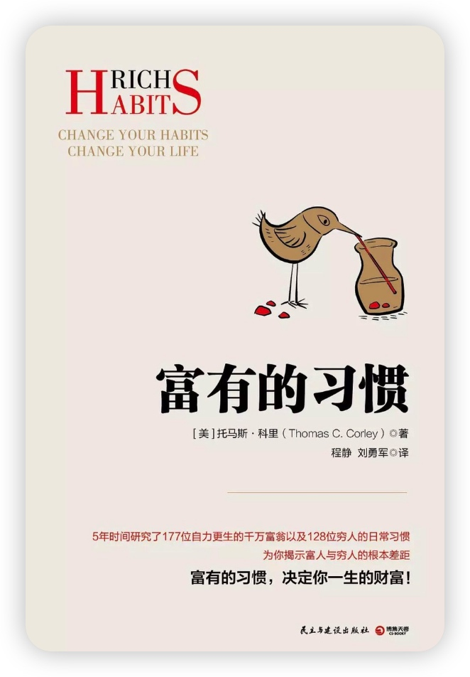

作者：托马斯•科里 译者：刘勇军

那今天为什么会选这本书呢？
一本非常有趣的书，披着成功学的外衣，背后是对“富有”这件事细密的洞察。一个美国著名的理财师，多年来研究几百个富翁和穷人的工作/生活方式，从中找到各自系统性的共性。
富有和贫穷都有马太效应，原因除了运气和宿命般的正反馈，是日复一日平凡的行为习惯，缓慢而持久的造就了一个人的一生。未必是要学习富人做对了什么，明明白白的知道自己为什么还没变富，也是极好的。
这几年才发现，原来大部分的鸡汤，都是真的。
只是，我们做不到而已，才说它是鸡汤。
这本书没那么落地，没那么方法论，不出奇也不装逼。
它就是一本平民版的《纳瓦尔宝典》。
正确而难的事，到底是什么事？
简单vs复杂，艰难vs容易
正确的事，都是简单而艰难的事。
搞明白第一性原理很复杂但很容易，
每天少吃200卡，很简单但极艰难。
朴素而正确的道理，并不是知道了就能做到。
反复强调，反复洗脑，做到的概率，大一些。
若是能有几句打动你，能照见自我，
也算是，我们共同的幸运。
运气和习惯
四种运气
第一种是“随机的好运〞。无法控制。彩票中大奖，意料之外的遗产等。
第二种是“随机的坏运气”。无法控制生病、被闪电古中、突发事改、房子突然技一棵大附医路。
第三种运气是“机遇〞。这种好运气是良好的日常习惯的副产品。不妨把机遇看成一颗苹果树。我们松好了土，种下种子，然后认真培育它长大。一段时间后，苹果树开花结果了，枝头的累累硕果就是我们长期以来辛勤劳动的产品。这些苹果便相当于机遇。
为了获得机遇，成功人士会做许多必须要做的事，并且长期坚持下去。他们每天都遵照富有的习惯生
活。机遇可遇不可求，但富有的习惯就像一块吸引机遇的磁铁。有的人称之为“吸引力法则”。
大数定律和正反馈
第四种是“厄运〞，它是机遇的反面。不成功的人都有坏习惯，坏习惯也是种子，它们会生根、发芽、长大，最后同样会结出果实。坏习惯结出来的坏果子会给人带来厄运，比如丢工作、投资失败、离婚、生病等等。
德沃金：原生运气和选项运气
习惯决决定命运
- 日常习惯在很大程度上决定了人们生活成功或失败的程度。
- “习惯也许枯燥乏味，却是人生成败的秘密所在。”
- 杜克大学的伍德和尼尔在《习惯新探》中认为，人类40%的日常活动是习惯使然。
- 如果我们有好的习惯，那么我们会收获快乐、取得成功，我们自然而然会创造美好的生活。
- 如果我们养成了坏的习惯，那么我们极有可能面临的将是经济问题、健康问题和情绪问题。
二、穷人的习惯和富人的习惯
穷人的习惯
- 消极心态 调查结果表明，有78%的穷人想法十分消极，凡事总是往坏的方面想，比如“我挣得钱真少啊”“满世界都是坏人”。特别是当我们有“有钱人都很坏”的想法时，我们就永远也不会真的成为有钱人。
- 投机心理 很多人认为天上会掉馅饼，他们追求不劳而获，认为自己有机会发横财。那些每天参与体育赌博和买彩票的人，成功的概率极其微小。而富人们从来不相信一夜暴富，他们更喜欢通过扎扎实实的奋斗来追求梦想和目标。
- 得过且过 在作者的研究中，95%的穷人没有任何人生规划，他们不会憧憬自己未来的生活。“没有人生蓝图和长期目标，我们就成了秋日的落叶，只能漫无目的地随风飘落。”
- 过度休闲 浪费时间，不能高效利用时间，这是穷人的特征之一。
96%穷人每天看电视的时间超过一小时
穷人的习惯就是普通人的习惯，所以普通人都是穷人
富人的习惯
富人关心自己的身体状况
76％的富人每星期至少有4天会花20～30分钟做有氧运动，比如跑步、慢跑、健走、骑自行车、游泳等等。跑步、慢跑或健走并不花钱，任何人都可以效仿。75%的富人不去快餐餐厅吃饭。快餐是不健康食品，容易引起肥胖等健康问题。
生活节制
成功人士没有过于激烈的情绪起伏，不对任何事物过分热衷，不受任何问题过度困扰，不暴饮暴食，也不饿肚子，更不铺张浪费。他们能够控制自己的想法和情绪，懂得保持均衡和谐的生活有多么的重要。他们的稳重让家人、朋友以及生意伙伴感到放松，对于提升人际关系有大的裨益。人们喜欢和他们在一起，与他们打交道，让人感到如沐春风。
不成功的人却很容易走极端，无法控制自己的生活。他们有一种攀比心态，所以总是任由外界的影响控
制自己消费的模式。他们无法有节制的生活，无法合理安排事情的轻重缓急，也做不到量入为出。
热爱阅读
在富人当中有85%的人每个月至少阅读两本书，88%的人每天至少阅读30分钟。他们读什么？51%的人读历史，55%读自我成长类书籍，58%阅读成功人士的自传，79％阅读学习资料。
绝不拖延
拖延是个贫穷的习惯，不管是金钱，健康，学习，只要出现拖延，最终只能泯然众人而告终。
不从众
从众是本能，出众需要练习。富人不跟随别人，富人创造自己的圈子，并把他人拉进来。我们总是希望融入到社会中，适应这个社会，并成为其中一部分，因此我们总会尽力不让自己过于突出。但是无法让自己与他人区分出来，这就是为什么大多数人无法获得成功的原因。你需要让自己突出，然后创造你自己的圈子，让别人来加入你。你有多富有取决于你影响了多少人。
思考和自省是日常习惯
思考是富人成功的关键。富人倾向于在早晨独立思考15~30分钟。他们每天早上头脑中思考很多事情。主题既包括事业和财务，也包括家庭、健康和慈善。他们经常会问自己这样的问题：“我怎么做才能赚更多钱？我的工作让我开心吗？我锻炼时间足够吗？我还可以参与哪些慈善活动？”
积极培养人脉
86%的富人会结交能够帮助自己实现梦想和目标的人，也就是在追求成功的道路上与他们志同道合的人。
富人是决策者
91%的富人为自己的业务做出决策。他们快速做出决定，并且接受决定带来的后果。他们不对事情思虑过度，而是迅速采取行动。
讲究礼仪
75%的富人会送出致谢卡片，也会在节假日或其他特殊时刻送出贺卡。他们将“请”“谢谢”和“我是否可以…”挂在嘴边。他们在听别人说话时会注视对方。他们将自己关心的人的生日、纪念日和各类人生大事的日期牢记在心。他们不会批评、谴责或抱怨别人。80%的富人会给看重的人打电话，送上生日祝福。生日祝福电话相当于为重要的人际关系加上一套“生命维持系统”，而收到祝福的人中有25%的人会有所回馈，这样的人际关系便脱离了需要“生命维持系统”的阶段。
充满激情
82％的富人坚持做自己感兴趣的事。激情就像一个开关，它一旦打开，人们就获得了坚持不懈的能量，而坚持是所有成功人土的头号特质。
设定并且追求宏大的目标
55%的富人会花上至少一年时间追求某一个目标。
经常说“不”
对那些可能阻碍自己实现人生目标和梦想的人和事说“不”，是富人的习惯之一。拒绝别人很难，但这是富人们常用的一个重要的时间管理工具。（亿万富翁对所有事说“不”）
从不八卦
94%的富人从不聊八卦。大部分八卦消息是负面的，会对人际关系带来无法弥补的伤害。富人热衷于打造稳固的人脉，所以对于八卦，他们就像对待瘟疫一般唯恐避之不及。
不会怎么想就怎么说
94%的富人不会把心里话完全说出来。他们三思而后行，对自己的想法进行分析和归纳，在针对重要的事情进行沟通的时候尽量做到有效。
相信自己
79%的富人坚信自己能够摆脱贫穷，或从中产阶层跃升为富有阶层。90%的富人不相信命运。他们认为自己的人生掌握在自己手中。
相信勤能补拙
90%的富人相信努力工作比高智商更为重要。
相信坚持能够带来好运气
92%的富人相信，只要对自己热爱的事物不懈追求，便能为自己创造好运气。他们总是孜孜不倦，百折不挠地追求梦想和目标。为了实现自己的梦想，成为富人，他们平均耗费的时间是12年。
拥有乐观的心态
54％的富人相信乐观是成功的重要因素。
懂得控制情绪
81%的富人养成了控制愤怒、嫉妒、埋怨和仇恨等负面情绪的习惯，因此人们与他们打交道时会觉得轻
松自在。
相信诚实就是最好的策略
85%的富人坚持说真话，从不撒谎。做一个诚实的人才能得到别人的信任，而信任是成功和稳固的人际关系的基础。
三、建立富人习惯
习惯量表
首先是立习惯觉察表
2天工作时间，按照从起床到入睡的顺序，把由工作和生活触发的习惯全部逐项记录下来。记录内容是序
号和习惯内容。
然后是建立习惯评估表。在习惯觉察表的后面添加一栏内容，对习惯内容的好坏进行评估，认为好的划+号，认为坏习惯的划-号。
最后建立富有的习惯跟进表。当我们认清哪些是富有的习惯，哪些是贫穷的习惯，那么就开始拟定一份富有的习惯清单。不公
积极制定目标
今年和来年的目标：我们有一定把握做到的，而且是自己想做的事，并把每个目标拆分成许多需要完成的任务。
长期目标：比较长远而宽泛的目标，可以把长期目标看作自己的“愿望清单”，围绕清单中的每个目标拟定具体的实现步骤，其中要包含每一个完成需要完成的任务和项目。
四、关于富有的十个习惯承诺
- 我要培养自己的日常富有的习惯，每天照做不误。
- 我会设定每日、每月、每年的目标以及长期目标，然后全心投入追求自己的目标。
- 我每天都要提升自我价值。
- 我每天都要关注自己的身体健康。
- 我每天都要建立并维护可持续的人际关系。
- 我每一天都会生活得有节制。
- 我会告诉自己“现在就做”，将当天的任务按时完成。
- 我会带着致富思维生活。
- 每次收到薪水后，我会拿出10%进行储蓄。
- 我每天都会控制自己的想法和情绪。